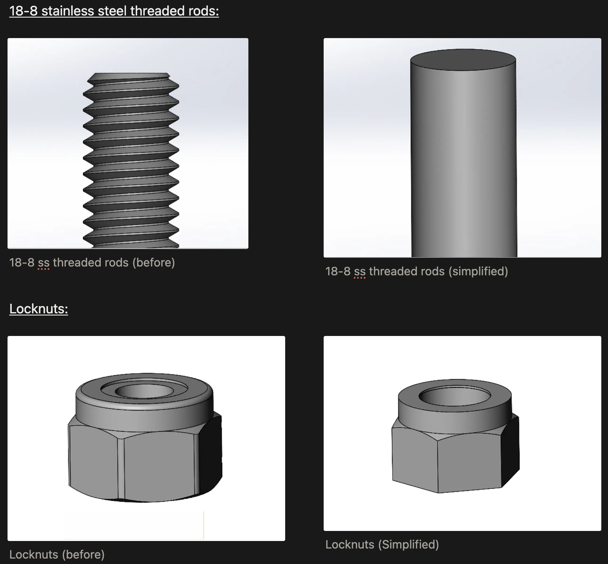
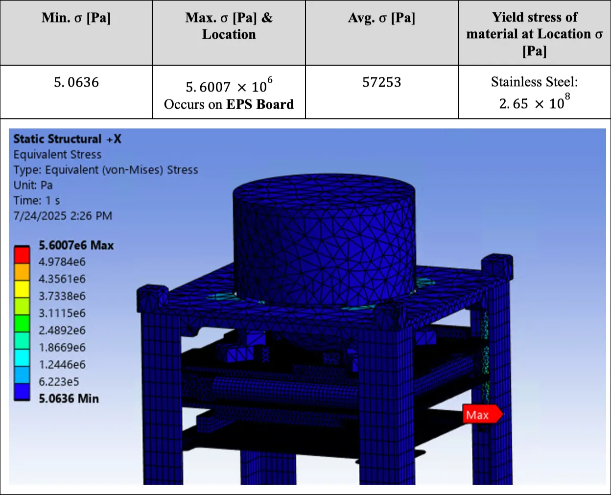

The University of Toronto Aerospace Team is a design team that aims to conduct crop residue mapping across Canada using satellite-based remote sensing. Within the mechanical team, I contributed to the design and analysis of the satellite’s structural framework, ensuring compactness, durability, and stability under launch conditions.
My role was to conduct structural simulations of the ADCS 10M subassembly (a subassembly within the satellie) to evaluate whether it could withstand launch stresses, vibrations, and accelerations, to help reduce mass. Using ANSYS Workbench, I performed quasi-static, modal, random vibration, and shock response spectrum analyses to capture the effects of different loading scenarios during launch.
First, I simplified key components—including threaded rods, locknuts, EPS boards, and the ADCS model—while ensuring that material properties were correctly assigned and validated. These included 6061-T6 aluminum, stainless steel, and FR-4 PCB materials. This step was crucial to maintain accuracy while ensuring that the simulations converged properly without excessive processing time.
The analysis process involved multiple iterations of mesh refinement to balance precision with simulation performance. Early iterations revealed stress concentrations on the locknuts and EPS board, prompting design simplifications and finer meshing around critical areas. By the final iteration, a global element size of 5 mm with localized refinements to 1.5 mm was applied, resulting in reduced stress concentrations, improved mesh quality, and more reliable deformation predictions.
Through this process, I identified critical stress and deformation regions while confirming that the ADCS subassembly could maintain structural integrity under most simulated launch conditions. These insights will guide further design improvements for the satellite’s mechanical framework.